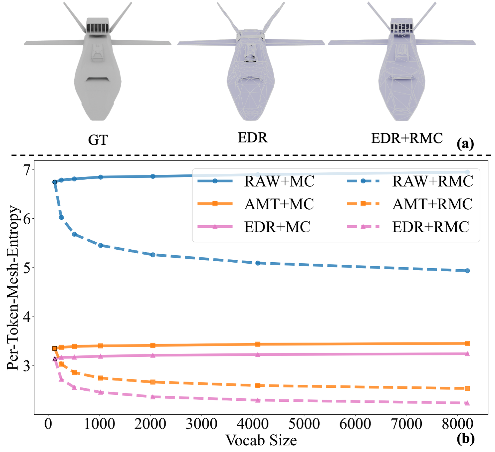

🔥 Method
In this paper, we introduce entropy as a mathematical tool for mesh serialization. Generally, sequences with lower information content are easier for sequence learning. We propose Per-Coordinate-Mesh-Entropy (PCME), a set of formulas derived from the raw representation of MeshXL. PCME quantifies the information in a mesh sequence, with a single coordinate as the basic unit. It's calculated as the product of information entropy and compression rate. A lower PCME indicates an easier-to-learn sequence and provides a training-free metric for tokenizer quality.
Guided by PCME, we explore ways to enhance current mesh tokenizers. Our observations revealed significant redundancy in serialized coordinate sequences. To address this, we propose merging multiple coordinates into additional tokens to reduce redundancy and facilitate mesh learning.
We extended PCME to Per-Token-Mesh-Entropy (PTME), where a token can be either a coordinate or a merged token. A good mesh tokenizer should exhibit a relatively low PTME. We validated PTME on existing tokenizers such as MeshXL, MeshAnythingV2, and EdgeRunner. Furthermore, we introduce coordinate merging, a technique that compresses these tokenizers by constructing a new vocabulary from high-frequency coordinates. This increases vocabulary size, further reducing PTME by compressing more coordinates. We implement token merging efficiently using SentencePiece training.
Per-Token-Mesh-Entropy
(a) This visualization demonstrates how our Rearrange & Merge Coordinates (RMC) method significantly enhances geometric detail preservation and improves topology. (b) A comparative analysis between the baseline Merge Coordinates (MC) and our proposed RMC approach. MC fails to reduce PTME, whereas our RMC framework effectively minimizes token entropy.
Coordinate Merging

Given a mesh, we first use a mesh tokenizer to convert the 3D structure into a 1D coordinate sequence. This sequence then undergoes rule-based rearrangement followed by token merging using the Byte Pair Encoding (BPE) algorithm. This approach significantly reduces sequence length, enabling poly generation models to create meshes with more faces.